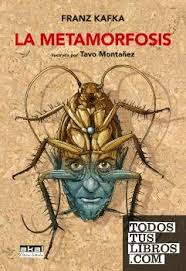

La Metamorfosis
Obra Maestra de la Literatura Universal
Franz Kafka
Editorial Alianza - ISBN: 978-8420669793
Sinopsis de La Metamorfosis
Gregorio Samsa despierta una mañana convertido en un enorme insecto. Esta transformación radical altera para siempre su vida y la de su familia, explorando temas como la alienación, la identidad y la condición humana.
Recomendado por Gabriel García Márquez como una de las obras más influyentes del siglo XX. Kafka nos presenta una narrativa única que combina lo absurdo con lo cotidiano, creando una de las metáforas más poderosas sobre la soledad y la incomprensión en la sociedad moderna.
🎬 Análisis y Reseña del Libro
Descubre los detalles y simbolismos de esta obra maestra